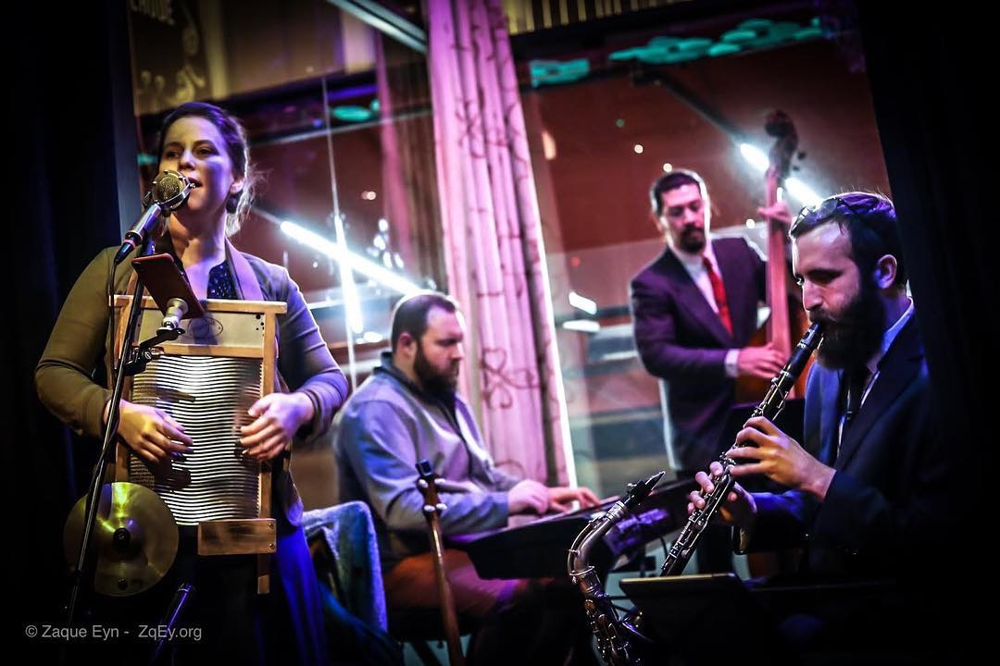
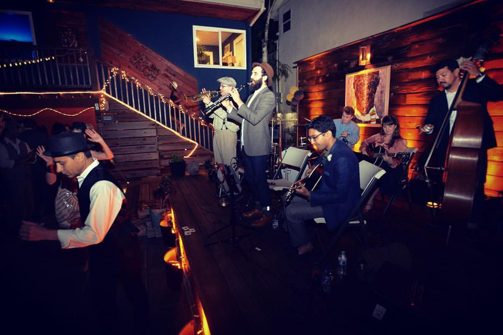

---
---

<main>
  <section class="full-bleed" style="background-image: url('images/home-band-full-1.jpg')">
  </section>
  <section class="centered">
    <h2>The Hot Baked Goods play dance music from the 1920s and ’30s</h2>
    <p>The Hot Baked Goods is an energetic band of jazz musicians playing hot tunes primarily from the 1920s–30s. Many
      of the band members started as swing dancers, and fell so in love with the music that they learned to make it
      themselves!</p>
    <p>
      <a class="button" href="about.html">Read More</a>
    </p>
  </section>
  <section>
    <ul class="gallery col-2">
      <li>
        
        <h3>Music</h3>
        <p>The Hot Baked Goods recorded their first album, <em>Live at the Bootleggers Ball</em>, at the Mission
          District's Community Music Center in San Francisco in 2017.</p>
        <p>
          <a class="button" href="music.html">Read More</a>
        </p>
      </li>
      <li>
        
        <h3>Clients</h3>
        <p>
          The Hot Baked Goods play frequently around the San Francisco Bay Area and beyond for swing dances, private
          parties, weddings, corporate events, and music venues.
        </p>
        <p>
          <a class="button" href="clients.html">Read More</a>
        </p>
      </li>

    </ul>
  </section>
  <section class="full-bleed" style="background-image: url('images/home-band-full-2.jpg')">
  </section>
</main>